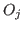
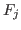

The normal situation for diffraction data
is that the observed signal is a photon count.
Therefore it follows a Poisson distribution.
If we have a count value  that follows a Poisson distribution,
we can assume immediately that the average is equal to
that follows a Poisson distribution,
we can assume immediately that the average is equal to  and the s.d. is
and the s.d. is
 .
I.e., repeated experiments would give values
.
I.e., repeated experiments would give values  distributed according to the normalized distribution
distributed according to the normalized distribution
This obeys


The standard deviation comes then to
When the data have to be analyzed, one must compare observations with a model
which gives calculated values of the observations in dependence of a certain set of
parameters. The best values of the parameters (the target of investigation)
are the one that maximize the likelihood function [4,5]. The likelihood function for
Poisson variates is pretty difficult to use; furthermore, even simple data manipulations
are not straightforward with Poisson variates (see Sec. 5.2.6). The common choice is to approximate
Poisson variates with normal variates, and then use the much easier formalism
of normal distribution to a) do basic data manipulations and b) fit data with model.
To the latter task, in fact, the likelihood function is maximized simply by minimizing
the usual weighted- [4] :
[4] :

where  are the experimentally observed values,  the calculated model values,
Substituting directly the counts (and derived s.d.s) for the observations in the former :
is the most common way. It is slightly wrong to do so, however [6], the error being large only when the counts are low. There is also a divergence for zero counts. In fact, a slightly modified form [6] exists, reading
Minimizing this form of